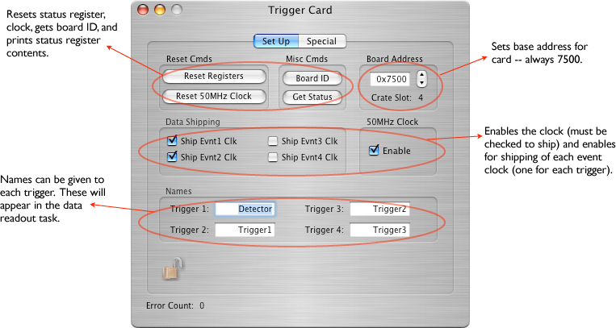
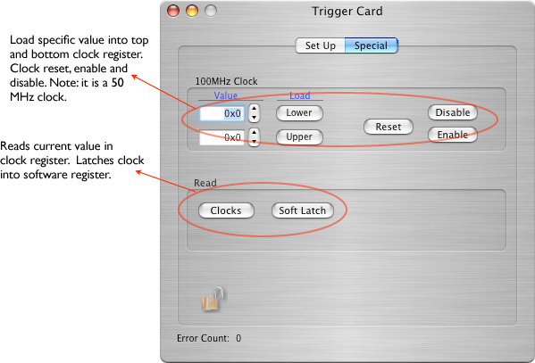

This card was built at the University of Washington to provide up to 4 different triggers (for VME cards) and is in use by the UW Radiology lab and the KATRIN experiment.
The configuration icon looks like: 
It can only be placed in the VME Crate object.


Trigger Clock Record Format
version 2 (new version)
xxxx xxxx xxxx xxxx xxxx xxxx xxxx xxxx
^^^^ ^^^^ ^^^^ ^^-----------------------Clock record ID